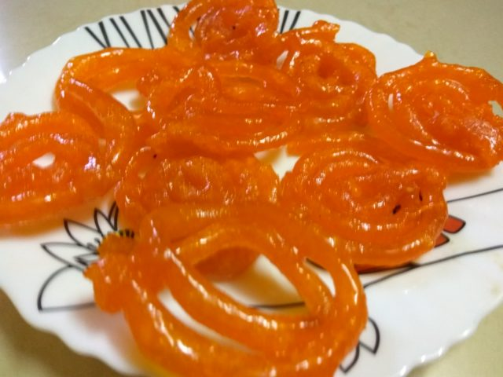
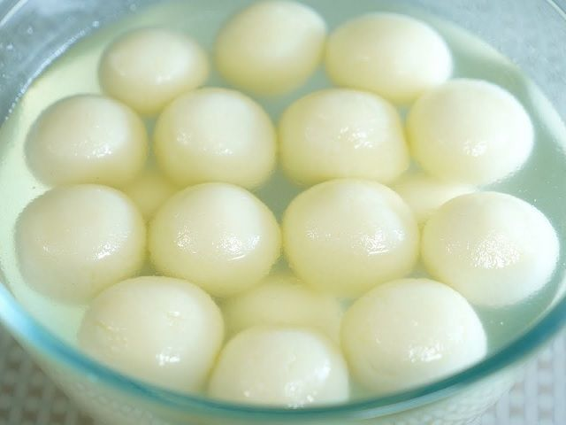
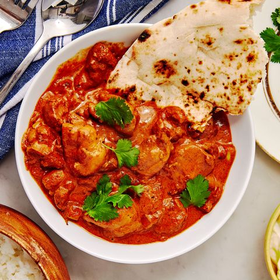
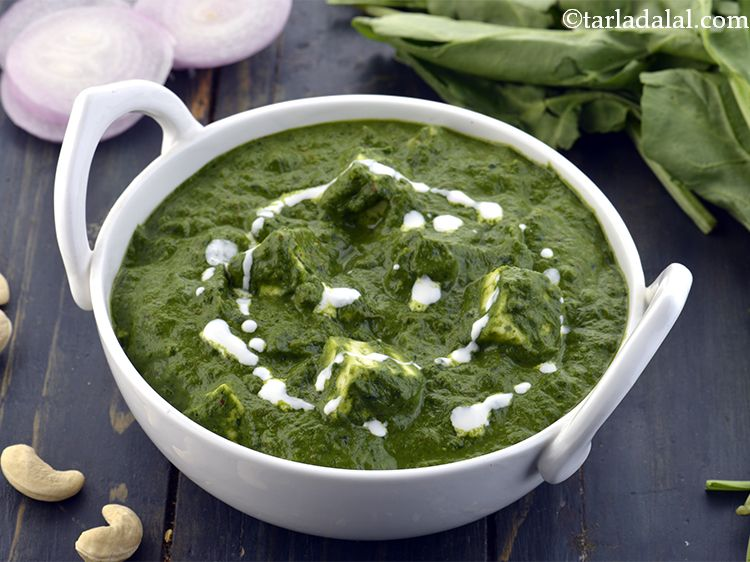
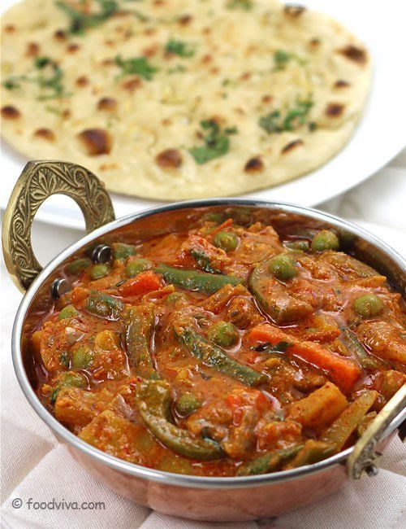
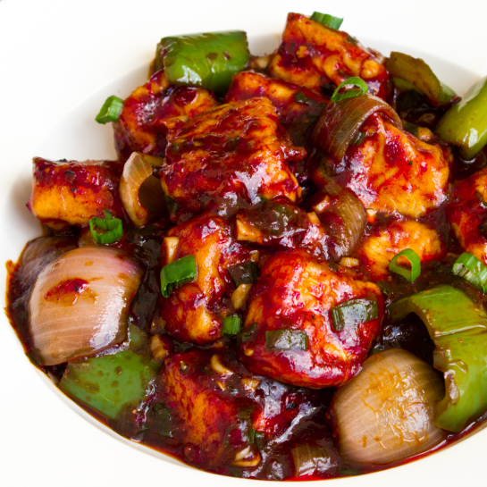
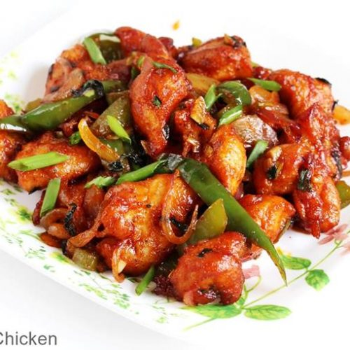
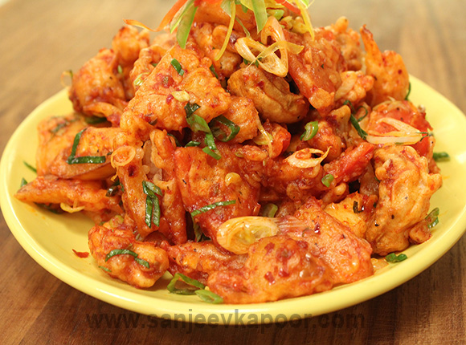

Go back
DIFFERENT TYPES OF CUISINES
There are different types of food in the whole world. All different countries have different types of cuisines and all the food have their different specialities.
SWEET
- GULAB JAMUN
Gulab Jamun is a sweet which is made of fried mava balls soaked in sugar syrup and garnished with green pista and kesar. It is a delicious indian sweet which is world famous.

- JALEBI
Jalebi is a sugar syrup coated sweet made from gram flour, which is fried in oil by making spiral shapes and then coated in sugar syrup.

- RASGULLA
It is a sweet made from milk by making paneer from it and making it soft by kneading it continuously. The balls made from this thing is then coated with sugar syrup and served hot.

MAIN COURSE
- BUTTER CHICKEN
Butter chicken is made by preparing gravy in spices and butter and cooking chicken pieces in it.

- PALAK PANEER
Palak paneeer is prepared by making spinach graving and adding pieces of paneer and spices into it.

- VEG KOLHAPURI
It is a dish made by mixing different types of vegetables and making gravy for it.

STARTERS
- PANEER CHILLI
It is dish made from diced paneer pieces and made from different vegetables and chinese sauces.

- CHICKEN CHILLI
It is made from chicken pieces by making sauted vegetables in different chinese sauces.

- VEG CRISPY
It is a dish made by mixing different types of vegetables and making spice mix for it.
